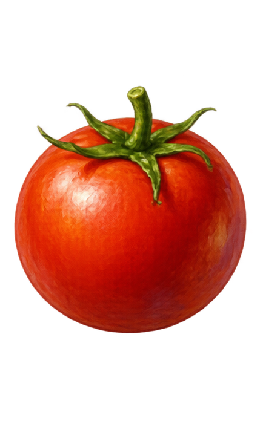
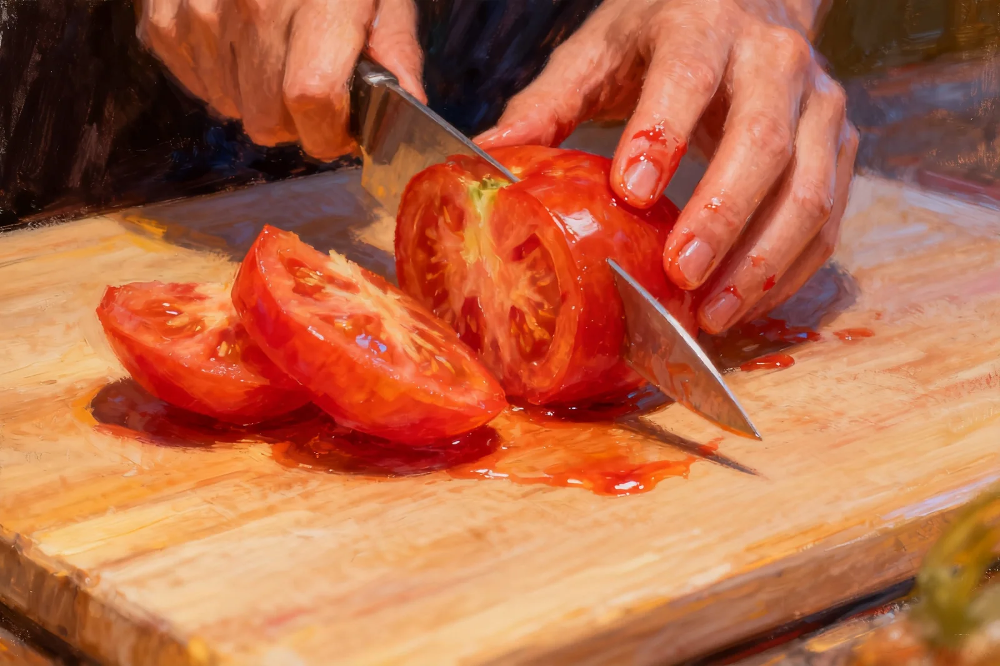
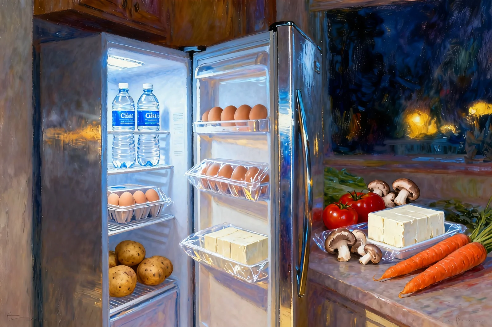
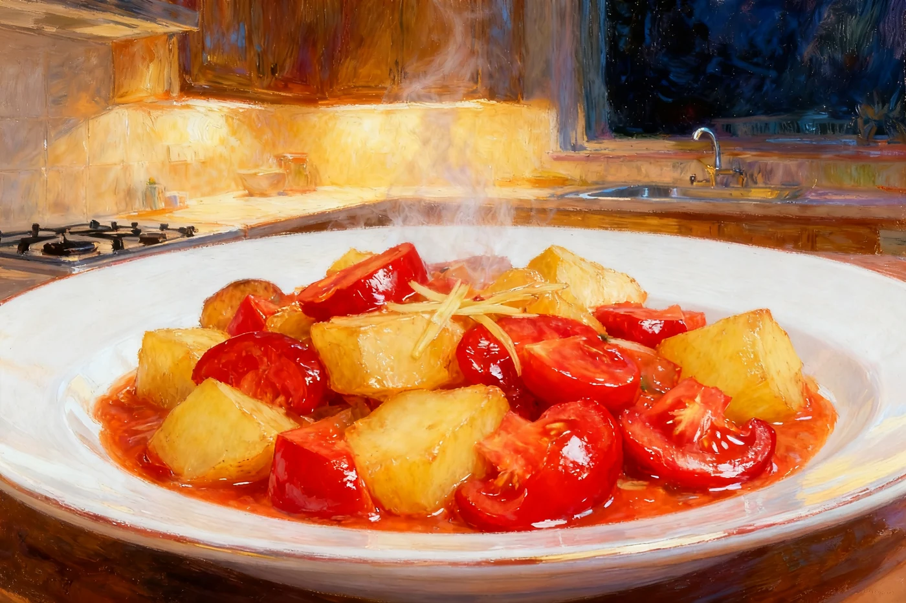

A small game about the things you bring home.Pick something for tonight ↓
01 / ON THE TABLEmake a dish for today
What are you carrying?
Pick an ingredient. There might be something familiar inside.
tonight's ingredient

03 / 0502 / A WAY THROUGHA small taste of the story

How will you
handle it?
The same ingredient. A different way of making room for it.
03 / HOW THE STORY UNFOLDSTwine / JiMeng / Adobe
A recipe made
of small choices.
Cooking gives everyday feelings a shape. Each step asks something different; there is no score to get right.

04 / KITCHEN NOTESbehind the story
Before it became dinner.
Open the cover.
